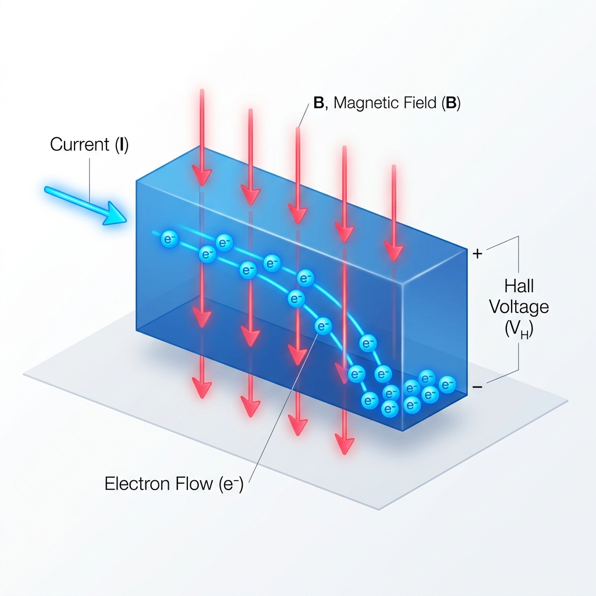
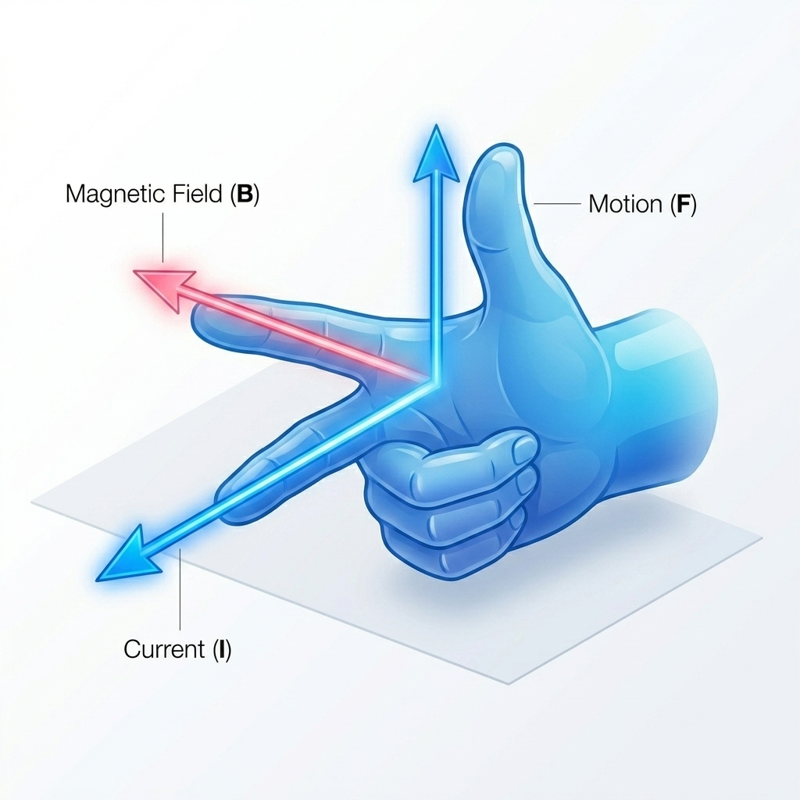

What is the Hall Effect?
What is the Hall Effect?
The Hall Effect is a fundamental electromagnetic phenomenon discovered in 1879 by the American physicist Edwin Hall.
When an electric current passes through a conductor or semiconductor placed inside a magnetic field that is perpendicular to the current, the magnetic field exerts a lateral force on the moving charge carriers (known as the Lorentz Force). This force deflects the charges toward one side of the material, causing them to accumulate on the edges. This charge accumulation creates a transverse electric field, which generates a potential difference called the Hall Voltage (VH).

Figure 1: 3D schematic of the Hall Effect. When current I flows through a semiconductor slab, a perpendicular magnetic field B deflects moving charge carriers to one side, establishing the Hall Voltage VH across the edges.
Physics Formula
💡 Mathematical Formula
For a homogeneous rectangular semiconductor slab, the maximum stable Hall Voltage is defined as:
VH = RH · (I · B) / d
- VH: Hall Voltage
- RH: Hall Coefficient (depends on the material's carrier density and type)
- I: Electric current flowing through the semiconductor chip
- B: External magnetic field strength
- d: Thickness of the sensor chip
In our simulation, you can drag the cover slider. As the cover gets closer to the sensor, the magnetic field B becomes stronger, causing a larger deflection force. This accumulates more charges on the edges, leading to a higher Hall Voltage VH.
Lorentz Force & Right-Hand Rule
✋ Right-Hand Rule (Deflection of Electrons)
In our micro-level simulation, electrons flowing through the semiconductor chip are deflected downwards. To determine the direction of the magnetic force acting on moving charge carriers, we use the Right-Hand Rule (Vector Cross Product):
F = q · (v × B)
-
1
Velocity Vector (v): Point the index finger of your right hand in the direction of the electron's movement. In our chip, electrons flow to the left, so point your index finger to the left.
-
2
Magnetic Field (B): Point your middle finger perpendicular to your hand in the direction of the magnetic field B. Since B points out of the screen (towards you), point your middle finger straight out towards you.
-
3
Cross Product Direction (v × B): Extend your thumb perpendicular to both fingers. Your thumb points straight upwards. This is the direction of the cross product v × B.
-
4
Account for Negative Charge (q): Since electrons are negatively charged (q = -e), the force F is in the opposite direction of the cross product v × B. Thus, reverse the upward direction: the resulting Lorentz Force points downwards!

Figure 2: Right-Hand Rule (Vector Cross Product). The index finger points in the direction of velocity v (left), the middle finger points along magnetic Field B (out of screen towards you), and the thumb indicates the cross product direction v × B (upwards). For a negative electron (q = -e), the resulting Lorentz Force F points opposite to the thumb (downwards).
Physics Conclusion: The Right-Hand Rule correctly predicts that the Lorentz Force pushes the flowing electrons toward the bottom edge (negatively charged), leaving a deficit of electrons—and thus a positive charge—on the top edge. This establishes the potential difference that generates the Hall Voltage!
Comparison
⚠️ Physics Reminder: Distinguishing Hand Rules
In electromagnetism, different hand rules are used for different phenomena. Here is a quick guide to distinguish them:
- Right-Hand Rule (Lorentz Force): Used to determine the magnetic force acting on moving charges using the vector cross product F = q(v × B). Remember to reverse the direction for negative charges!
- Left-Hand Rule (Fleming's Force Rule): An alternative rule specifically for current-carrying wires, where the thumb points in the direction of the force.
- Right-Hand Grip Rule (Ampere's Rule): Point your right thumb in the direction of the current; your curled fingers show the direction of the encircling magnetic field.
iPad Application
📱 How does the iPad sleep and wake up with a Smart Cover?
A tiny Hall Effect sensor chip is embedded behind the iPad's bezel, executing the following logic:
🧲
1. Embedded Magnets
Small permanent magnets are embedded inside the edge of the iPad Smart Cover.
📟
2. Hall Sensor in Bezel
A highly sensitive Hall sensor chip is located in the bezel (corresponding to the semiconductor chip in our micro-view).
⚡
3. Closing the Cover
When the cover closes, the magnets align directly over the sensor. The magnetic field deflects the flowing electrons, causing the Hall Voltage to rise. The system detects this high potential and immediately puts the display to sleep.
☀️
4. Opening the Cover
When the cover is peeled open, the magnetic field drops to zero, and the electrons flow straight. The Hall Voltage drops back to zero, instantly waking up the display for a seamless user experience.